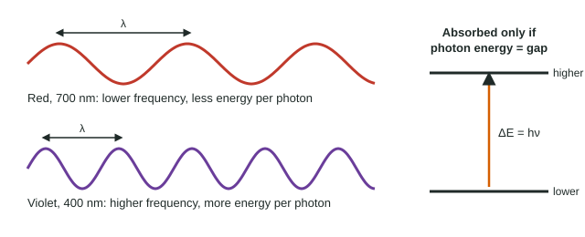

Only ultraviolet light, not visible light, gives you a sunburn, while hours under a bright red lamp do nothing. The previous topic said shorter wavelengths carry more energy per photon. This page makes that exact with two equations from the equations sheet, so you can calculate the energy of light and connect it to the energy levels of atoms and molecules.
Speed, wavelength and frequency
All electromagnetic radiation travels through a vacuum at the same speed of light, c = 2.998 × 108 m/s. For any wave, speed = wavelength × frequency:
c = λν
λ (lambda) is the wavelength, in meters; ν (nu) is the frequency, in s−1 (also written Hz, hertz). Since c is fixed, wavelength and frequency are inversely proportional: halve the wavelength and the frequency doubles (Figure 1).

Worked example: frequency from wavelength. What is the frequency of red light with a wavelength of 700. nm?
Step 1, convert to meters. 700. nm × (1 m / 109 nm) = 7.00 × 10−7 m. Wavelength must be in meters to match c.
Step 2, rearrange and substitute. ν = c / λ = (2.998 × 108 m/s) / (7.00 × 10−7 m) = 4.2829 × 1014 s−1.
Step 3, round. Three significant figures: 4.28 × 1014 s−1.
The energy of one photon
Light is absorbed and emitted in packets, photons. The energy of one photon is proportional to its frequency:
E = hν
h is Planck's constant, 6.626 × 10−34 J·s. Combining with c = λν gives E = hc/λ: higher frequency or shorter wavelength means a more energetic photon. Energy in this equation is always for one photon and comes out in joules, a very small number.
Worked example: energy per photon and per mole. What is the energy of one photon of 400. nm violet light, and of one mole of such photons in kJ/mol?
Step 1, frequency. λ = 4.00 × 10−7 m. ν = c/λ = (2.998 × 108 m/s) / (4.00 × 10−7 m) = 7.495 × 1014 s−1.
Step 2, energy of one photon. E = hν = (6.626 × 10−34 J·s)(7.495 × 1014 s−1) = 4.9662 × 10−19 J, which is 4.97 × 10−19 J per photon.
Step 3, per mole. Multiply by Avogadro's number and convert to kJ: 4.9662 × 10−19 J × 6.022 × 1023 mol−1 = 2.9906 × 105 J/mol = 299 kJ/mol.
That is in the same range as the energy of many covalent bonds, which is why UV and violet light can drive chemical reactions.
Photons and energy levels
Energy levels in atoms and molecules are fixed: they are quantized. An atom or molecule absorbs a photon only if the photon's energy equals the gap between two levels, ΔE = hν. When an electron drops back from a higher level to a lower one, a photon of exactly that energy is emitted. So each element gives off its own set of wavelengths, which is why sodium street lamps glow orange-yellow at 589 nm and neon signs glow red.
Worked example: from a gap to a wavelength. An electron in an atom drops between two levels 3.03 × 10−19 J apart. What wavelength of light is emitted, and what color is it?
λ = hc / E = (6.626 × 10−34 J·s × 2.998 × 108 m/s) / (3.03 × 10−19 J) = 6.5560 × 10−7 m = 656 nm, which is red light.
| Slip | Fix |
|---|---|
| Wavelength left in nm | Convert to m: 1 nm = 10−9 m. |
| E = hλ | E = hν = hc/λ; energy falls as wavelength rises. |
| Per photon vs per mole | hν is one photon in J; multiply by 6.022 × 1023 for a mole, then divide by 1000 for kJ. |